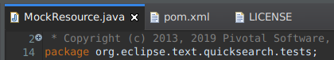
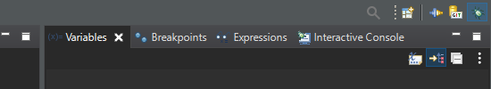
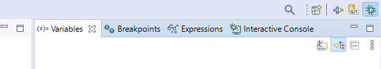
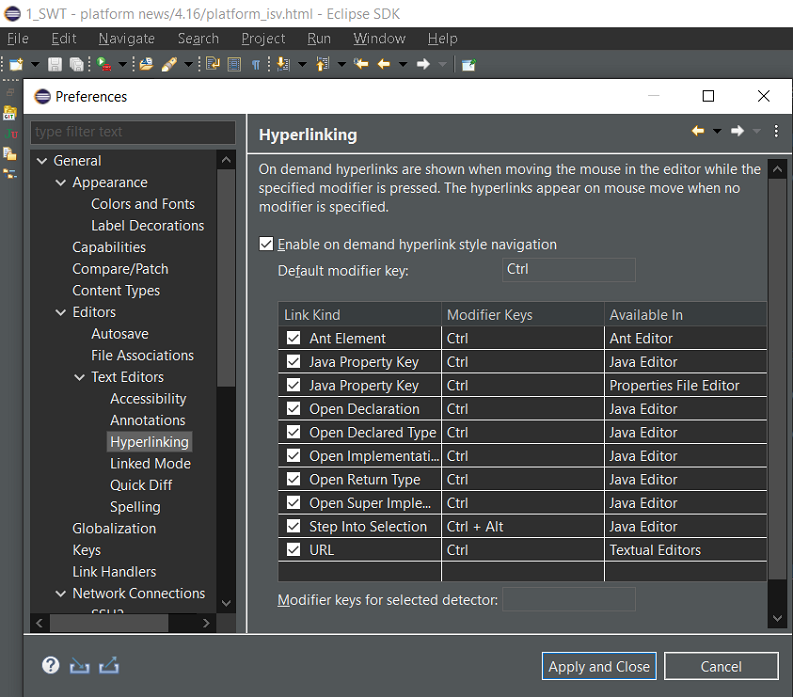
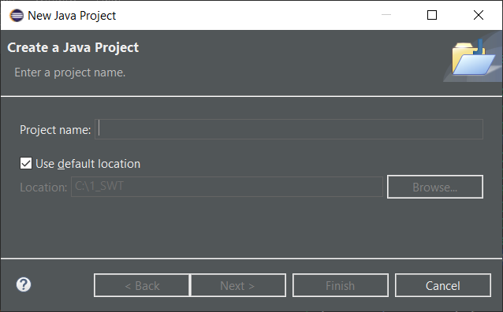
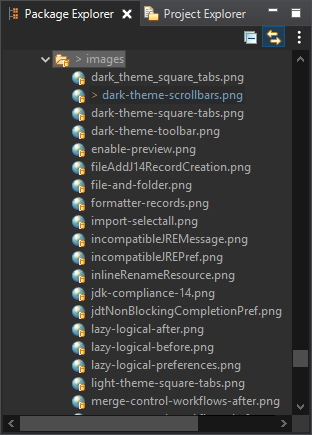

Platform Changes
BrowserViewer now uses the extensions to org.eclipse.urischeme.uriSchemeHandlers.
When clicking a hyperlink with a non-default supported web browser URI scheme, the extensions are checked and if one can
handle the URI scheme, it will be triggered.
One example is Marketplace Client providing support for eclipse+mpc://... URIs. Using the BrowserViewer and
clicking an eclipse+mpc://... link target will open the Marketplace Client wizard.
Such URLs have the form eclipse+command://commandId?param1Id=value¶m2Id=value.
For example, to open a preference page: eclipse+command://org.eclipse.ui.window.preferences?preferencePageId=org.eclipse.ui.browser.preferencePage
This link handler must be activated from the Link handlers preference page to bind the Eclipse application with this URL scheme in the OS.
org.eclipse.e4.core.di.extensions such as @EventTopic have been made an official API.
These APIs have already been commonly used by dependency injection in E4 RCP applications, but have only been marked as provisional APIs thus far. The provisional flag has now been removed.
T run(ISafeRunnableWithResult<T> code);
Example:
int result = SafeRunner.run(new ISafeRunnableWithResult <Integer >() {
@Override
public Integer runWithResult() throws Exception {
return 42;
}
})Using lambda:
int result = SafeRunner.run(() -> 42);swt-selected-tab-highlight CSS property.
By default, the highlight is placed at the top of the tab, but it can be changed by using the boolean CSS property swt-selected-highlight-top.
Here's how it looks when enabled with the dark theme: 
Example usage in CSS:
# Set the selected tab highlight color
swt-selected-tab-highlight: white;
# Set whether the highlight should be on top or bottom of the tab (default is true)
swt-selected-highlight-top: false;


SWT Changes
StyledText widget on Windows. It was already supported on Linux and macOS.
Screenshot of ligatures drawn in StyledText and Text widgets on Windows 10:

Colors to be disposed as they are not allocated
any OS resources.
- Dark scrollbars (only on Win10)
- Custom colors for
Menubar:For Example: dark menu can be enabled via setting below key/value pairs on the
Displayinstance as shown below:display.setData("org.eclipse.swt.internal.win32.menuBarForegroundColor", new Color(display, 0xD0, 0xD0, 0xD0));
display.setData("org.eclipse.swt.internal.win32.menuBarBackgroundColor", new Color(display, 0x30, 0x30, 0x30));
display.setData("org.eclipse.swt.internal.win32.menuBarBorderColor", new Color(display, 0x50, 0x50, 0x50));
- Custom color for
Tableheader lines:For Example: table header line color for dark theme can be enabled via setting below key/value pair on the
Displayinstance as shown below:display.setData("org.eclipse.swt.internal.win32.Table.headerLineColor", new Color(display, 0x50, 0x50, 0x50)); - Dark theme compatible Control borders:
For Example: dark border for below supported controls can be enabled via setting below key/value pair on the
Here's how darkDisplayinstance as shown below:display.setData("org.eclipse.swt.internal.win32.Canvas.use_WS_BORDER", true);
display.setData("org.eclipse.swt.internal.win32.List.use_WS_BORDER", true);
display.setData("org.eclipse.swt.internal.win32.Table.use_WS_BORDER", true);
display.setData("org.eclipse.swt.internal.win32.Text.use_WS_BORDER", true);
display.setData("org.eclipse.swt.internal.win32.Tree.use_WS_BORDER", true);
Menu,Tableheader andTextborder looks like in Eclipse:
 - Custom color for disabled
Labelforeground color:For Example: disabled
Here's how dark disabledLabelforeground color for dark theme can be enabled via setting below key/value pair on thedisplayinstance as shown below:display.setData("org.eclipse.swt.internal.win32.Label.disabledForegroundColor", new Color(display, 0x80, 0x80, 0x80));Labellooks like in Eclipse:

On Windows 10 all the dark theme tweaks including the dark scrollbars can be disabled using the
org.eclipse.swt.internal.win32.disableCustomThemeTweaks Java property.
For Example: add this VM argument in eclipse.ini or on the command line after -vmargs:
-Dorg.eclipse.swt.internal.win32.disableCustomThemeTweaks=trueNote: Once this Java property is set, all above
display.setData() calls won't come into effect.
Dark scrollbars can be enabled via Display.setData() with the following key/value pair:
display.setData("org.eclipse.swt.internal.win32.useDarkModeExplorerTheme", true);

On Windows 10, all the dark theme tweaks including the dark scrollbars can be disabled using the
org.eclipse.swt.internal.win32.disableCustomThemeTweaks Java property.
For Example: add this VM argument in eclipse.ini or on the command line after -vmargs:
-Dorg.eclipse.swt.internal.win32.disableCustomThemeTweaks=trueNote: Once this Java property is set, the above
display.setData() call won't come into effect.
When saving, there are some options to control saving:
- save to incrementing file numbers to make it easier to capture multiple files without prompts
- save the preview to png files cross referenced to the main text file
- include stack traces if "Stack" is checked